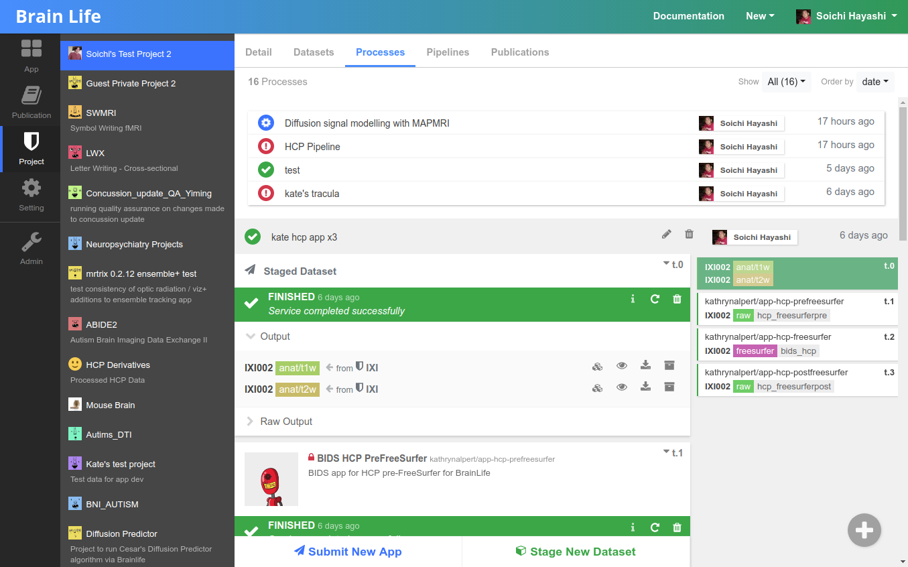
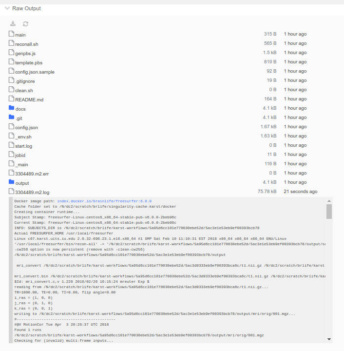
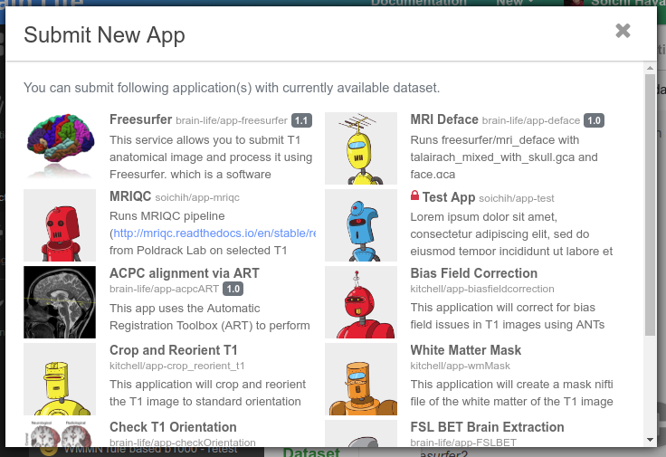

Processes¶
Please read Tutorial / Data Processing first.
Under Project page, Processes tab is where you can perform data analysis on Brainlife.

Each process is a logical grouping of various data analysis/processing tasks that share input and output datasets. Each task you submit will be assigned to various computing resources that you have access to and are currently available. Brainlife's task orchestration engine (Amaretti) takes care of data transfer and monitoring of your tasks.
To begin processing of your data, first you need to stage the initial datasets. You can stage from any project that you have read access to and for any subject. However, it is best to create a separate Process for each subject, as it would make it easier to submit Apps by allowing Brainlife to auto-populate various input datasets.
Monitoring Tasks¶
Brainlife monitors task status on remote resources and relays the most recent log entries back to the UI.
You can also see the entire content of the log by opening the Raw Output section of the task and selecting any log files you'd like to examine.

Note
Raw Output section will not be available for tasks that are not yet assigned to any resource.
If you'd like to download files, instead of opening directly via the browser, you can click the download () button to download individual files, or the entire directories.
Task Status¶
Brainlife task can have one of the following task statuses.
-
Requested
When you first submit your task, Brainlife will place them under the Requested state and wait for Brainlife to assign a resource to run on. If there are many other tasks being processed, it might take a while for it to be picked up, but it should not take more than a few minutes. Once the resource is assigned, Brainlife will transfer any dependent input datasets and setup a
work directoryon the resource. -
Running
Once the task is ready to be executed, Brainlife will make a request to the local resource to start your task. Most resources have their own local batch scheduling systems, and your task will be placed in a queue where it waits for it to be actually executed on the system. Brainlife status might show that it's
runningeven though it is actually just waiting in the remote queue. -
Finished
The task has completed successfully. You can visualize output datasets using Brainlife's built in visualization tool by clicking buttons next to each output dataset. If you have requested to auto-archive the output datasets (at submit time), those datasets will be copied to the Project's datasets archive. Any dependent task will be placed in Requested status.
-
Failed
If the App terminates with non-0 exit code, the task will be marked as Failed. Please examine the output and determine the cause of the failure. Please help improving the App by contacting the App developer and/or submitting github issues.
-
Removed
Most resources use what is called a scratch space to stage the task's work directory. Normally scratch space has a time limit on how long the data files can be left on those systems (typically 30-90 days). When Brainlife detects that the task directory no longer exists on remote systems, it will mark those tasks as
Removed.Note
Brainlife will try to clean up old task directories in 25 days after the successful completion of the task to provide consistent behavior across various resources. This also reduces the disk space usage on various resources. If you have any output dataset that you'd like to keep, please archive ig or submit your task with the auto-archiving flag checked.
If you archive your output, you will see a list of datasets archived from this output.

Submitting Apps¶
You can submit Apps in a couple of different ways.
One way is to use the Submit New App button under each process, as you have done already. Brainlife selects Apps that you can currently submit based on available datasets within the process and required input datasets for each App.

The more datasets you stage or generate, the more Apps you can submit. If you don't find an App that you are looking for, please head over to the App page and find the app you are trying to submit. You can either go back to the Process page and generate or stage required datasets, or you can execute the App directly from the App page by selecting the Execute tab under the App, which is our second way to submit an App.

When you submit App via the Execute tab, Brainlife will create a new process under the selected project and stage all input files you have selected and submit your app in a single step.
Tip
If you are looking for just any sample dataset, you can try O3D project which contains a lot of common data derivatives.